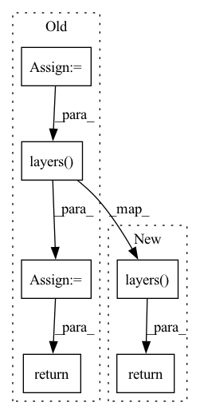

Pattern ID :11279

Before Change
nn.Conv1d(in_channels, out_channels, kernel_size=1, padding=0, bias=True))
def forward(self, enc_out, enc_out_len) -> Tuple[torch.Tensor, torch.Tensor]:
x = torch.transpose(enc_out, 1, 2)
x = self.layers(x)
x = torch.transpose(x, 1, 2)
return x, enc_out_len
class AudioToCharCTC(pl.LightningModule):
After Change
nn.Conv1d(in_channels, out_channels, kernel_size=1, padding=0, bias=True))
def forward(self, enc_out) -> torch.Tensor:
return self.layers(enc_out)
class AudioToCharCTC(pl.LightningModule):
def __init__(self, audio_size, embed_size, vocab_size, hidden_size, learning_rate):
In pattern: SUPERPATTERN
Frequency: 4
Non-data size: 6
Instances
Fragment ID: 38395215
Project Name: kaiidams/voice100
Commit Name: 666f7e13ac1493414cf4b67e98a58f7752a3c31e
Time: 2021-06-19
Author: katsuya.iida@gmail.com
File Name: voice100/models.py
M Class Name: LinearCharDecoder
N Class Name: LinearCharDecoder
M Method Name: forward(2)
N Method Name: forward(3)
M Parent Class: nn.Module
N Parent Class: nn.Module
M File Name: voice100/models.py
N File Name: voice100/models.py
M Start Line: 124
M End Line: 128
N Start Line: 125
N End Line: 125
'>
Before Change
InvertedResidual(hidden_size, out_channels, kernel_size=99, use_residual=False))
def forward(self, embed, embed_len) -> Tuple[torch.Tensor, torch.Tensor]:
x = torch.transpose(embed, 1, 2)
x = self.layers(x)
x = torch.transpose(x, 1, 2)
return x, torch.div(embed_len + 1, 2, rounding_mode="floor")
class LinearCharDecoder(nn.Module):
After Change
InvertedResidual(hidden_size, out_channels, kernel_size=99, use_residual=False))
def forward(self, embed) -> torch.Tensor:
return self.layers(embed)
def output_length(self, embed_len) -> torch.Tensor:
return torch.div(embed_len + 1, 2, rounding_mode="trunc")
'>
Fragment ID: 38395214
Project Name: kaiidams/voice100
Commit Name: 666f7e13ac1493414cf4b67e98a58f7752a3c31e
Time: 2021-06-19
Author: katsuya.iida@gmail.com
File Name: voice100/models.py
M Class Name: ConvVoiceEncoder
N Class Name: ConvVoiceEncoder
M Method Name: forward(2)
N Method Name: forward(3)
M Parent Class: nn.Module
N Parent Class: nn.Module
M File Name: voice100/models.py
N File Name: voice100/models.py
M Start Line: 110
M End Line: 114
N Start Line: 111
N End Line: 111
'>
Before Change
]))
self.layers = ReversibleSequence(layers)
def forward(self, x, input_mask = None):
x = torch.cat([x, x], dim = -1)
x = self.layers(x)
return torch.stack(x.chunk(2, dim=-1)).sum(dim=0)
class SinkhornTransformerLM(nn.Module):
def __init__(self, num_tokens, dim, max_seq_len, depth, buckets = 64, heads = 8, causal = False, sinkhorn_iter = 5, n_sortcut = 0, temperature = 0.75, ff_chunks = 1):
After Change
self.layers = execute_type(layers)
def forward(self, x, input_mask = None):
return self.layers(x)
class SinkhornTransformerLM(nn.Module):
def __init__(self, num_tokens, dim, max_seq_len, depth, buckets = 64, heads = 8, causal = False, sinkhorn_iter = 5, n_sortcut = 0, temperature = 0.75, reversible = False, ff_chunks = 1):
super().__init__()
'>
Fragment ID: 38395219
Project Name: lucidrains/sinkhorn-transformer
Commit Name: f24294788dafa05fc2237e1af5e10aa21f7a247b
Time: 2020-04-04
Author: lucidrains@gmail.com
File Name: sinkhorn_transformer/sinkhorn_transformer.py
M Class Name: SinkhornTransformer
N Class Name: SinkhornTransformer
M Method Name: forward(3)
N Method Name: forward(3)
M Parent Class: nn.Module
N Parent Class: nn.Module
M File Name: sinkhorn_transformer/sinkhorn_transformer.py
N File Name: sinkhorn_transformer/sinkhorn_transformer.py
M Start Line: 287
M End Line: 289
N Start Line: 309
N End Line: 309
'>
Before Change
self.layers = ReversibleSequence(layers)
def forward(self, x, **kwargs):
x = torch.cat([x, x], dim = -1)
x = self.layers(x, **kwargs)
return torch.stack(x.chunk(2, dim=-1)).mean(dim=0)
class LinearAttentionTransformerLM(nn.Module):
def __init__(self, num_tokens, dim, depth, max_seq_len, heads = 8, causal = False, one_kv_head = False, ff_chunks = 1):
After Change
self.layers = execute_type(layers)
def forward(self, x, **kwargs):
return self.layers(x, **kwargs)
class LinearAttentionTransformerLM(nn.Module):
def __init__(self, num_tokens, dim, depth, max_seq_len, heads = 8, causal = False, one_kv_head = False, reversible = False, ff_chunks = 1):
super().__init__()
'>
Fragment ID: 38395220
Project Name: lucidrains/linear-attention-transformer
Commit Name: fa23ce09a98a63d26116e3935ad5902cf705255d
Time: 2020-06-04
Author: lucidrains@gmail.com
File Name: linear_attention_transformer/linear_attention_transformer.py
M Class Name: LinearAttentionTransformer
N Class Name: LinearAttentionTransformer
M Method Name: forward(2)
N Method Name: forward(2)
M Parent Class: nn.Module
N Parent Class: nn.Module
M File Name: linear_attention_transformer/linear_attention_transformer.py
N File Name: linear_attention_transformer/linear_attention_transformer.py
M Start Line: 218
M End Line: 220
N Start Line: 219
N End Line: 219